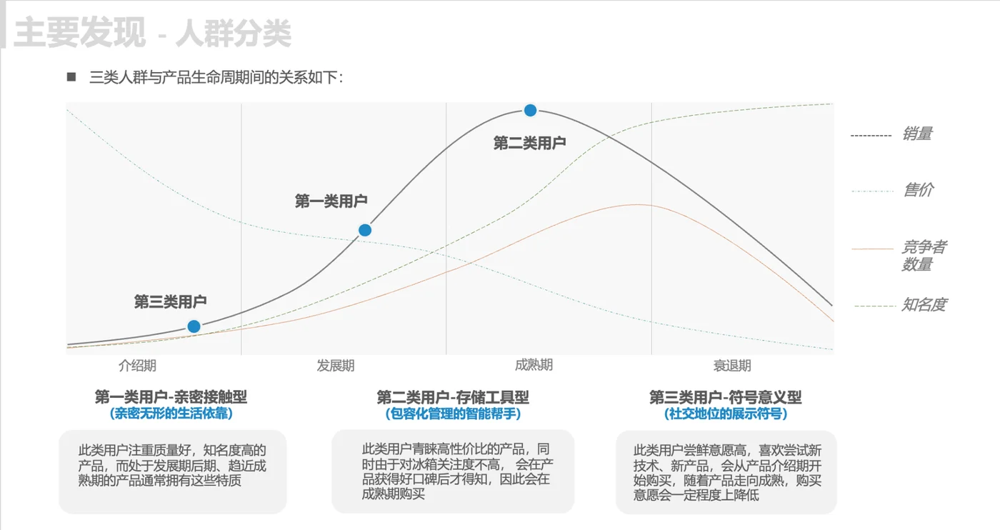
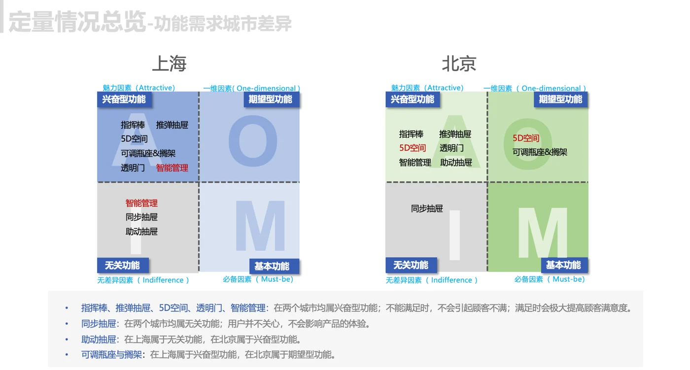
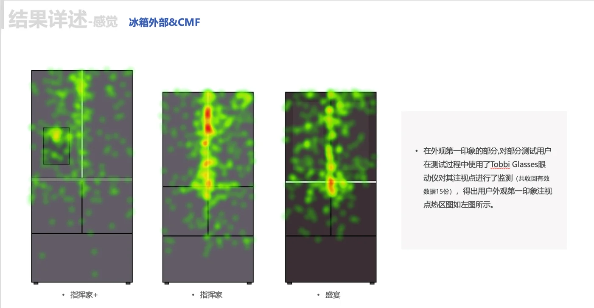
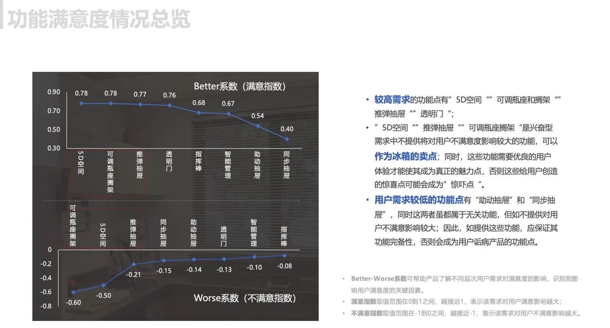

需求挖掘阶段
· 对18名高端用户进行入户访谈
· 输出用户画像和核心需求洞察
USER RESEARCH + PRODUCT INNOVATION
围绕高端家电新品，从生活方式、厨房场景、食材管理习惯与智能化需求出发，支持智能冰箱的产品定位、功能设计与量产前优化。
查看研究亮点项目概览
我的角色与职责
担任项目经理及核心研究人员，负责客户需求对接、研究方案设计、项目进度统筹、用户研究执行、阶段性成果输出、整体报告撰写与客户汇报。
关键动作
· 对18名高端用户进行入户访谈
· 输出用户画像和核心需求洞察
· 使用Kano模型对功能点进行需求验证
· 区分基础需求、期望需求和兴奋点需求
· 结合40名用户眼动测试和语义研究
· 评估产品外观、交互细节和用户理解偏差
· 提出设计优化建议
研究过程与关键发现
通过入户访谈、Kano模型验证、眼动测试与语义研究，逐步验证用户需求、功能优先级及产品设计方向。




项目价值 / 落地成果
研究结论被用于新品功能设计和量产前优化，该产品于2019年上市并参展AWE。
· 支持产品定位与功能优先级判断
· 为量产前设计优化提供依据
· 将研究结论转化为可执行的产品建议